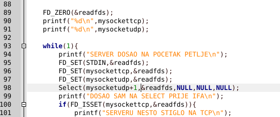
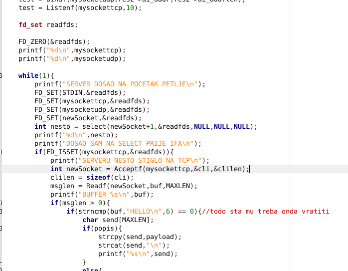
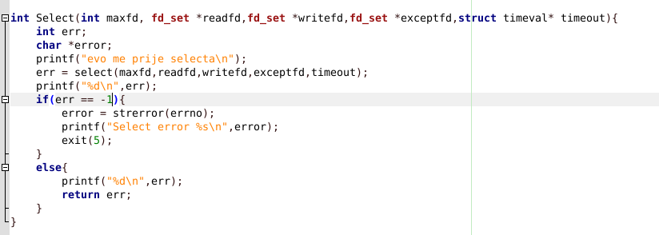

 ev sad je kod ovako i ne radi svakako ne prodje select
azex
BigZ1 s primjera na https://beej.us/guide/bgnet/examples/selectserver.c FD_ISSET mora biti u for petlji koja izgleda ovako for (i = 0; i <= fdmax; i++)
for (i = 0; i <= fdmax; i++)
EDIT: aha, ili mozes provjeriti sve svoje sockete, kako si pretpotstavljam ti napravio, ali kanije moras napraviti da ti je u readsfd setu listener socket, pa nakon accepta dodas novi socket koji si dobio s accept(), te bi tako morao podrzati vise konkurentnih klijenta. Opet pogledaj primjer s linka, ja sam ga puno koristio
Mariox e pa gledao sam to ali ocigledno mi i dalje nije jasno,razumijem da accept mi vrati novi socket i to odradim nakon fd_isset od tcp socketa no opet mi nije jasno kako sav isti kod prodje u selectu u botu a u serveru ne. msm kod izgleda isto kao i ondje gore,ali unutar toga obradim ovo sto bude u aceptu.  evo cak i dio koda,kuzim da bi ja mozda trebao taj od accepta dodat onda u listu skroz novih no zasad ni ovo ne radi jer ne prodje select svakako. EDIT: inace napisao sam i wraper funkciju selecta no probao sam ovdje bas select pozvat da nije neki problem. no on kao da zapne u selectu i ne ide dalje a ne baci error
BigZ1 koja je error poruka? Napravi si Select() wrapper
Mariox  ev i wrapper cak sam stavio i err <0 i nije se nist promijelo.. Pokusavam rec da se error ne dogodi nekako no zapne tu i program se NE terminira.
BigZ1 oprosti ako je glupo pitanje, ali samo da provjerim, jesi poslao nesto programu? Npr s stdina?
Mariox pokrenuo sam samo skriptu bash testiraj.sh i u njoj uneo pt i tjt i tu sve stane al nije glupo pitanje,logicno je
BigZ1 pokreni samo server i pokusaj mu poslat na stdin nesto, mozda jednostavno select nije nista primio
Mariox jok samo mogu upisivat do kraja vjeka vjekova i tjt. Ma nista sutra ce mi ujutro asistenti reci sta ne valja jer nemam pojma vise.
BigZ1 aa stvarno mi nije jasno zasto se blokira zauvik, barem kada upises u terminal server nesto trebalo bi radit, valjda ce ti oni rec sta konkretno ne valja, drzin fige
Kako koristite select u botu kada istovremeno treba slat payloadove zrtvama? Mislio sam da je ideja koristit signale za bot, a select za server?
staverm ja sam koristia procese u botu jer ne pise da trebamo sa selectom, pa kad treba zaustavit samo posaljem kill procesu djetetu
azex ma sve 5 stari nemam pojma iskreno nemam volje vise pa nek mi oni pomognu i dobro da dobije ⅖ ja zadovoljan no svakako cu ga poslije za sebe prepravit do kraja.
BigZ1 mozda je ispis samo sjeban, pokusaj nakon svakog printf napisat naredbu fflush(0); to mi je upravo palo na pamet, ajd jos to provaj pa javi
kako podržati broadcast? Samo staviti
Setsockopt(victimSockets[i], SOL_SOCKET, SO_BROADCAST, &on, sizeof(on));
? Kako provjeriti je li radi?
Mariox ja sam stavio tako i nisam dobio nikakvu primjedbu za to u mailu.. Nisam siguran kako bi testirao tho
rozy Ja sam isto tako stavio. Za testiranje sam otišao u C&C i za r2 promijenio adresu na broadcast od lokalne mreže i onda pokrenuo jedan netcat da sluša. Nisam testirao s više klijenata na istoj mreži, ali radilo je za tog jednog i nisam dobio primjedbu za broadcast u mailu, tako da mi valjda radi.
r2
Ima li skripta za testiranje za ovaj labos?
Mariox http://mrepro.tel.fer.hr/lab2/
std::popcount koju si adresu stavio? 127.0.0.255?
Mariox Ne, to mi nije radilo. Mislim da local loopback ne podržava broadcast. Stavio sam 10.0.2.255, tu adresu sam pročitao iz ispisa naredbe ifconfig.
ifconfig